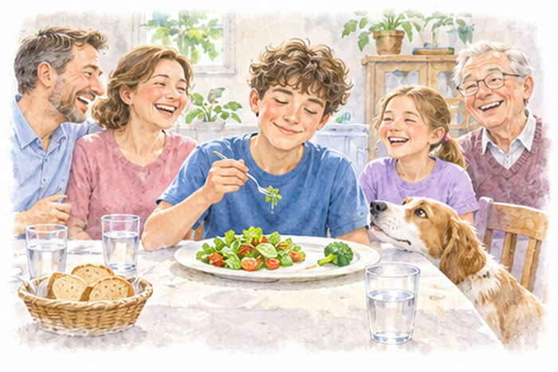

Listen to the text
Speed:

People change. Sometimes we don't notice it until we look back. My family did an experiment at dinner: each of us had to finish two sentences. "I used to..." and "Now I am used to..." Dad started. "I used to smoke. I smoked for fifteen years. I stopped when you were born. The first month was terrible. Now I am used to living without cigarettes, and I can run up to the fifth floor." Mum: "I used to go to bed at two in the morning. I thought that I was a night owl. Then I changed my job, and I had to get up at six. Now I am used to getting up early. I even like it. Don't tell anybody." My sister Zoia, who is ten: "I used to be afraid of water. I didn't use to swim at all. Now I am used to the swimming pool. I go there twice a week, and the coach says that I am like a fish." Grandpa: "I used to walk seven kilometres to school. There were no buses in our village. Now I am used to the car, and my legs are not happy about it." Then it was my turn. "I used to hate vegetables. I used to hide broccoli under the mashed potatoes." "We knew," said Mum. "Now I am used to eating salad every day. I am not used to broccoli yet. But I am working on it." "Did you use to feed it to the dog?" asked Zoia. The dog looked at me. I said nothing.
Tap any sentence to hear it again.
Сподобалось? На сайті ще більше матеріалів для вчителів!
Reader, презентації, ігри, діагностичні та контрольні роботи до підручників 1-11 класів.
Перейти на сайт materials.allaenglish.com